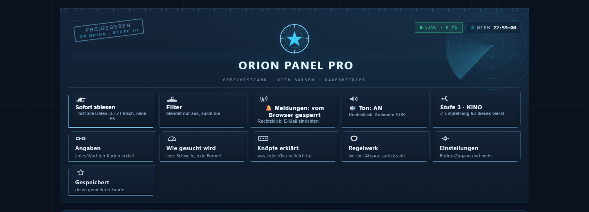
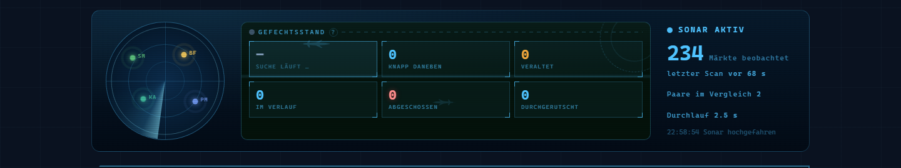
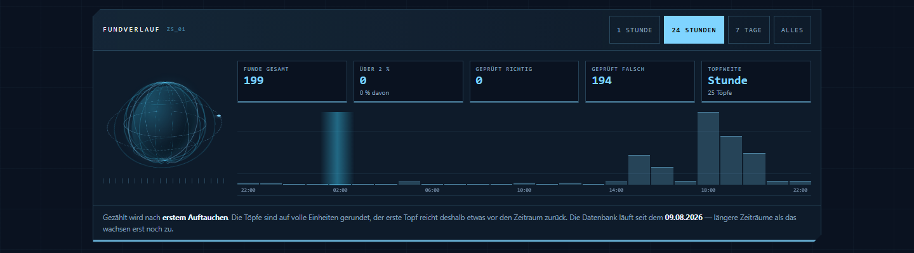
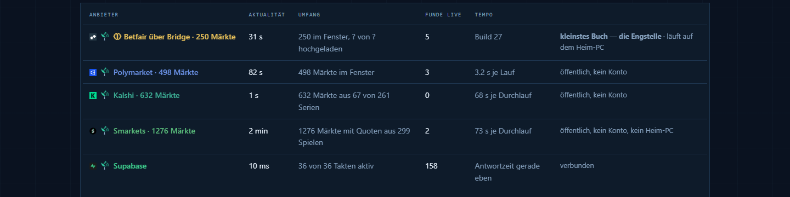
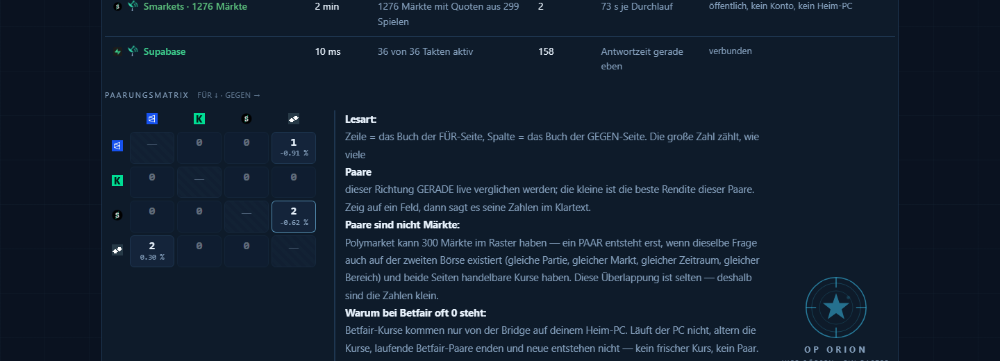
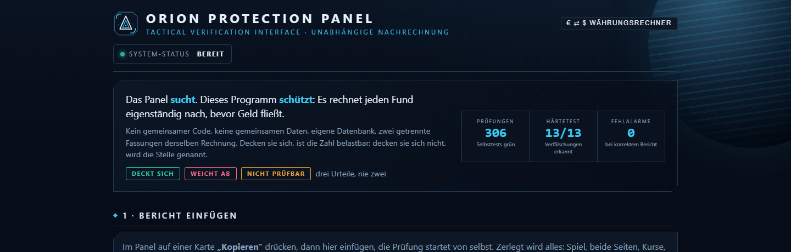
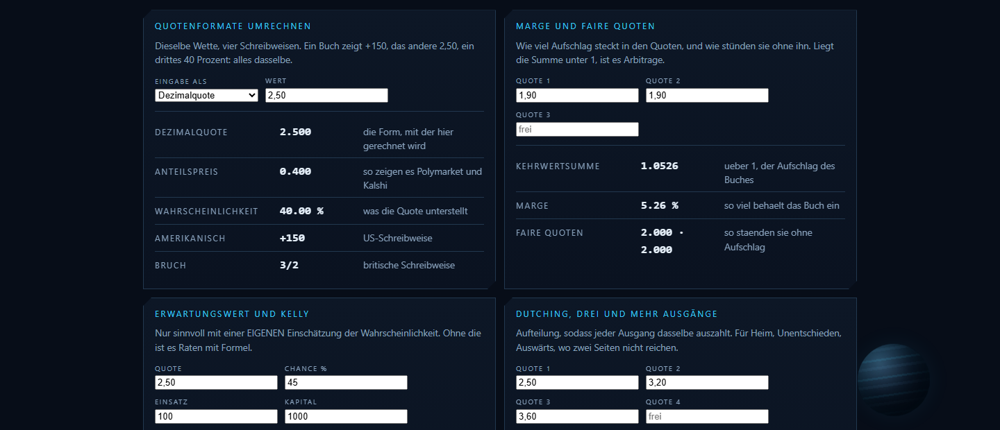
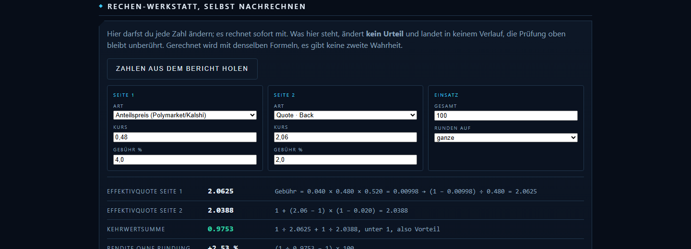

Zwei Programme, zwei Aufgaben
Das eine sucht. Das andere glaubt dem ersten kein Wort.
Orion Panel Pro
Vergleicht laufend die Kurse von vier Börsen, jedes Buch gegen jedes. Findet es zwei Kurse, die zusammen unter eins liegen, legt es den Fund samt vollem Rechenweg ab und meldet ihn. Gesucht wird auf einem Server, nicht im Browser.
Orion Protection Panel
Nimmt den Bericht eines Fundes und rechnet ihn von vorne durch, mit einer zweiten, eigenständigen Fassung derselben Formeln. Kein gemeinsamer Code, keine gemeinsame Datenbank. Deckt sich die Zahl, ist sie belastbar. Deckt sie sich nicht, wird die Stelle genannt.
Orion Panel Pro
Der Gefechtsstand. Vier Börsen, ein Raster.
Der schwierige Teil ist nicht das Rechnen. Der schwierige Teil ist die Frage, ob zwei Einträge aus zwei Büchern überhaupt dasselbe Ereignis meinen. Dieselbe Mannschaft heißt bei jedem Anbieter anders, dieselbe Liga trägt eine andere Kennung, und dasselbe Zeitfeld bedeutet mal den Anpfiff und mal eine Abrechnungsfrist Tage später. Jede Paarung muss deshalb sieben Hürden nehmen, bevor sie gerechnet wird.

Alles, was man braucht, liegt oben: Sofort ablesen, Filter, Meldungen, Ton, Animationsstufe. Daneben jede Erklärseite, die es gibt. Rechts oben die Sonaruhr, die zeigt, wie alt der letzte Durchlauf ist.

Der Zustand in einem Blick: beobachtete Märkte, Alter des letzten Scans, Dauer des Durchlaufs. Ein Bereich ohne Daten meldet das, statt grün zu leuchten. Ein stiller Ausfall ist schlimmer als ein lauter.

Was nicht mehr gilt, verschwindet nicht, es wandert in den Verlauf. Gezählt wird nach erstem Auftauchen, und neben der Gesamtzahl steht immer, wie viele davon die Nachprüfung bestanden haben und wie viele nicht.

Jede Quelle mit Alter, Umfang und Tempo. Auch die unbequeme Wahrheit steht da: welches Buch die Engstelle ist und warum. Ein Buch hängt an einem Rechner zuhause, weil es Rechenzentren aussperrt. Das steht als Satz da und nicht in einer Fußnote.

Jedes Buch gegen jedes, mit der besten Rendite je Feld. Daneben in Klartext, warum ein Feld leer ist. Leer ist eine Aussage, kein Fehler: eine Paarung entsteht erst, wenn dieselbe Frage auf beiden Börsen existiert und beide Seiten handelbare Kurse haben.
Jedes Buch gegen jedes. Nicht gegen ein Leitbuch. Eine Absicherung besteht immer aus genau zwei Büchern und genau zwei Ausgängen derselben Frage.
Läuft ohne offenen Browser. Gesucht wird auf dem Server, im festen Takt, auch nachts und mit zugeklapptem Laptop.
Eine Wache, die nicht glaubt. Die zweite Stufe leitet jede Hürde jede Minute neu aus der gespeicherten Zeile ab.
Jede Zahl nachrechenbar. Effektivquoten nach den echten Gebühren des jeweiligen Buchs, Kehrwertsumme, Aufteilung, alles auf 1.000 vorgerechnet.
Meldung nur nach Prüfung. Nachricht geht erst raus, wenn das Urteil der Wache leer ist und der Fund eine Bewährungszeit überstanden hat.
Beide Währungen, immer. Zwei Bücher führen Dollar, zwei Euro. Jeder Betrag steht in beiden, nie nur in einer.
Der Gefechtsstand steht hinter einem Kennwort. Ohne Zugang sieht man die Beschreibung, nicht die Funde.
Orion Protection Panel
Das Panel sucht. Dieses Programm schützt.
Ein Fund ist eine Behauptung, bis ihn jemand nachgerechnet hat. Hier wird der Bericht eingefügt, zerlegt und Schritt für Schritt neu gerechnet: Effektivquoten, Kehrwertsumme, Aufteilung, Gebühren in echtem Geld. Dazu Querproben, die der Bericht nicht liefert, sondern die das Programm selbst beim Anbieter holt: Gebührensatz, handelbare Menge, Marktfrage hinter dem Link, Anpfiffzeit.

Drei Urteile, nie zwei: deckt sich, weicht ab, nicht prüfbar. Der dritte Fall ist der wichtige. Was von außen nicht prüfbar ist, wird als nicht prüfbar ausgewiesen und nicht durchgewinkt.

Quotenformate, Marge und faire Quoten, Erwartungswert und Kelly, Aufteilung über drei und mehr Ausgänge. Dieselben Rechenarten, die große Dienste anbieten, hier einzeln nachvollziehbar und ohne Einfluss auf das Urteil.

Jede Zahl frei änderbar, jede Formel sichtbar daneben. Kurs, Gebühr, Einsatz, Rundung. Man sieht sofort, was eine Rundung auf ganze Euro von der Rendite übrig lässt. Gemessenes Beispiel: 2,53 Prozent werden zu 1,94.
Zwei getrennte Ampeln. Rechnung richtig ist nicht dasselbe wie Gewinn. Ein Fund kann sauber gerechnet und trotzdem nichts wert sein.
Geldfluss in echtem Geld. Einsatz, brutto, Gebühr in Euro, netto, Gewinn, je Seite getrennt und am Ende der schlechtere Ausgang als garantiert.
Paarungsprüfung. Eigene Fassung der Sperren: Jugend, Reserve, Frauen, Anpfiffabstand, Liga. Zwei verschiedene Spiele werden als solche benannt.
Herkunft jeder Angabe. Aus dem Bericht, beim Anbieter nachgefragt oder selbst gerechnet. Mit Link auf die Abfrage.
Rechenblätter auf hellem Papier. Formel oben, jedes Zwischenergebnis darunter, eigene Zahl gegen Panel-Zahl. Kontrast gemessen: 13,3 zu 1.
306 Selbsttests, Härtetest 13 von 13. Absichtlich verfälschte Berichte, alle erkannt, null Fehlalarme bei korrekten Berichten.
Der Prüfer ist derzeit offen erreichbar. Er zeigt keine Funde, er rechnet nur nach, was man ihm gibt.
Der Weg eines Fundes
Von der Quelle bis zu der Zahl, auf die man sich verlässt.
- Sammeln Jede Börse hat ihren eigenen Takt und ihre eigene Schnittstelle. Eine davon sperrt Rechenzentren aus und wird deshalb über einen Rechner zuhause angebunden.
- Paaren und rechnen Sieben Hürden an einer einzigen Stelle im Code, danach die Rechnung mit den echten Gebühren. Zwei Wege mit zwei Maßstäben wären genau die Drift, die hier schon Geld gekostet hat.
- Nachwachen Jede Minute, unabhängig, aus der gespeicherten Zeile heraus. Auch eine beim Paaren saubere Zeile kann inzwischen faul sein: der Anpfiff ist vorbei, die Kurse sind weitergelaufen.
- Melden Erst mit leerem Urteil, geprüfter Kurssumme und überstandener Bewährungszeit. Lieber eine Meldung weniger als eine falsche.
- Nachrechnen im zweiten Programm Bericht kopieren, in das Protection Panel einfügen, eigene Zweitrechnung samt Anbieterabfrage. Erst wenn beide Fassungen dieselbe Zahl zeigen, ist die Zahl belastbar.
Klartext
Was diese Programme ausdrücklich nicht tun.
- Sie setzen nichts. Kein Geld wird bewegt, kein Auftrag ausgeführt, kein schreibender Zugang zu irgendeinem Konto. Es werden Kurse gelesen und Rechnungen gemacht.
- Sie versprechen nichts. Eine Zahl auf einer Karte ist eine Rechnung zum Kursstand von jetzt, kein Ergebnis. Kurse laufen weiter, oft während man hinsieht.
- Sie verschweigen keinen Rest. Wo eine Absicherung zerfallen kann, weil zwei Bücher denselben Abbruch verschieden werten, steht das auf der Karte und nicht in einer Fußnote.
- Sie behaupten nicht, alles gemessen zu haben. Was ungemessen ist, wird als ungemessen gekennzeichnet.
- Sie sind keine Finanzberatung und kein Glücksspielangebot. Es sind Rechenwerkzeuge. Was jemand mit einer Zahl macht, ist seine eigene Entscheidung und sein eigenes Risiko.
Zugang und Preise
Heute per Code. Später per Zugangsschlüssel im Monatsbezug.
Der Zugang ist derzeit nicht käuflich. Es gibt keinen Bestellknopf, keine Kasse und keinen Zahlungsdienstleister im Spiel. Wer einen Code hat, kommt rein, wer keinen hat, sieht diese Seite. Die Preistafel steht schon da, weil die Struktur stehen soll, bevor sie gebraucht wird.